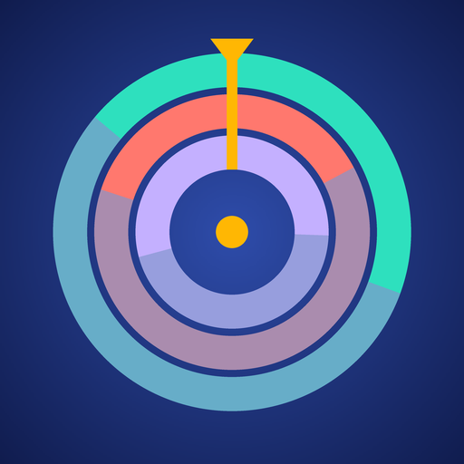

Chronicity playtest
Thanks for helping test! Pick your phone below.
Android
Download the APK- Open the downloaded file. If asked, allow installs from this source.
- Open Chronicity. Allow notifications when asked (needed to keep timers running with the screen off).
- Follow the on-screen tip to set battery use to Unrestricted.
iPhone / iPad
Open Chronicity- Open this page in Safari.
- Tap the Share icon, then Add to Home Screen.
- Launch Chronicity from the new home-screen icon.
On iPhone, keep the screen on while timing. Sound and timing stop if the phone locks or you leave the app.
What to try
- Time Master: 3 alarms, then try Sync to clock. Rename an alarm.
- Tabata: lead-in, 2 to 3 segments, padding, several rounds.
- Metronome: open it, tick the per-item boxes, change them while running.
- Pause/Resume, tap the timer for hundredths, pull down the top tabs mid-run.
- Android: lock the screen for 10+ minutes mid-timer. Does it keep sounding?
Send me feedback
Text me: your phone model and OS version, what you did, what you expected, what happened. A screenshot or screen recording helps a lot.